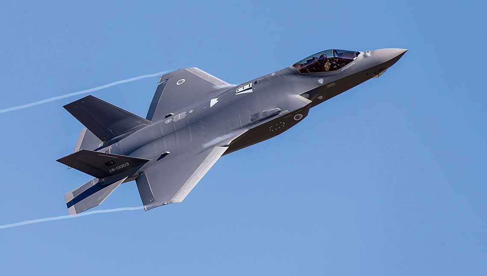

STRONA GŁÓWNA
SAMOLOTY
F-16 F-22 F-35 AC-130
General Dynamics F-16 Fighting Falcon
General Dynamics F-16 Fighting Falcon – samolot wielozadaniowy zaprojektowany przez amerykańską wytwórnię General Dynamics.
Od drugiej połowy lat 70. XX wieku do roku 2012 wyprodukowano 4500 egzemplarzy. Od 1993 roku myśliwiec produkowany jest przez Lockheed Corporation (obecnie Lockheed Martin).
F-16 jest użytkowany przez siły powietrzne 26 krajów, w tym Polski (do której pierwsza para trafiła 8 listopada 2006). W Polsce, wbrew dosłownemu tłumaczeniu, przyjęto nazwę Jastrząb, dla odróżnienia od używanego w polskim lotnictwie śmigłowca wielozadaniowego PZL W-3 Sokół. Wśród amerykańskich pilotów znany pod nazwą Viper.
F-16 jest myśliwcem 4. generacji, zaprojektowanym i wprowadzonym do produkcji seryjnej w latach 70. XX wieku w znacznej mierze w wyniku doświadczeń zdobytych w latach 60. Najnowsze wersje samolotu spełniają wymagania myśliwców generacji 4,5. F-16 powstał w rezultacie badań rozpoczętych w ramach programu Lightweight Flighter Program, zapoczątkowanego przez Siły Powietrzne Stanów Zjednoczonych w 1960 roku. W czasie projektowania szczególnie duże znaczenie miała analiza doświadczeń zdobytych w czasie konfliktów zbrojnych, w których uczestniczyły Stany Zjednoczone, w szczególności z wojny w Wietnamie.
Lockheed Martin F-22 Raptor
Lockheed F-22 Raptor – amerykański myśliwiec przewagi powietrznej.
Wykonany w technologii stealth, został zaprojektowany głównie do walki z lotnictwem ZSRR w wypadku naruszenia przestrzeni powietrznej USA, posiada jednak uzbrojenie pozwalające na atakowanie celów naziemnych, prowadzenie wojny elektronicznej i nasłuchu elektronicznego.
Samolot nosił oznaczenie YF-22, następnie przez trzy lata przed wprowadzeniem do służby Sił Powietrznych Stanów Zjednoczonych F/A-22, by ostatecznie przyjąć nazwę F-22A. Głównym wytwórcą jest koncern Lockheed Martin, odpowiedzialny za konstrukcję płatowca, uzbrojenie oraz końcowy montaż samolotu. Firma Boeing Integrated Defense Systems dostarcza natomiast skrzydła, tylną część kadłuba oraz awionikę.
W drugiej połowie lat 80. XX wieku sowieckie samoloty MiG-29 i Su-27 demonstrowały bardzo dobre właściwości manewrowe, a Su-27 również i osiągi. W połączeniu ze znacznym wzmocnieniem sowieckiej obrony powietrznej stwarzało to zagrożenie dla samolotów F-15 w warunkach ewentualnego konfliktu. W ramach programu Advanced Tactical Fighter uwaga konstruktorów amerykańskich skupiona była na opracowaniu samolotu, mogącego skutecznie zastąpić samolot F-15.

Lockheed Martin F-35 Lightning II
Lockheed Martin F-35 Lightning II – amerykański jednomiejscowy, jednosilnikowy myśliwiec wielozadaniowy piątej generacji zbudowany przez korporację Lockheed Martin w ramach projektu Joint Strike Fighter, który miał na celu zbudowanie maszyny spełniającej wymagania wszystkich rodzajów amerykańskich sił zbrojnych.
Wersja prototypowa samolotu była znana pod nazwą X-35 JSF, ale 7 lipca 2006 roku maszyna dostała nową oficjalną nazwę Lightning II. F-35 Lightning II jest zdolny do wykonywania misji bliskiego wsparcia, bombardowań i typowo myśliwskich zadań walki powietrznej.
Projekt samolotu jest finansowany wspólnie przez rządy Stanów Zjednoczonych, Wielkiej Brytanii i innych krajów zainteresowanych zakupem tej maszyny. F-35 Lightning II został zbudowany pod kierownictwem firmy Lockheed Martin, przy współpracy z BAE Systems i Northrop Grumman.
Program JSF został zainicjowany w celu zbudowania maszyny zdolnej zastąpić wiele typów samolotów, co ma doprowadzić do redukcji kosztów ich produkcji i utrzymania. Docelowo mają powstać trzy wersje F-35, w których 80% elementów konstrukcyjnych będzie identycznych, a pozostałe 20% będą stanowić dedykowane systemy, przystosowujące maszynę do pełnienia określonych zadań lub działań w specyficznych warunkach.
Lockheed AC-130
AC-130 – uzbrojona wersja samolotu Lockheed C-130 Hercules produkowana w kooperacji przez wytwórnie Lockheed i Boeing.
Samoloty te posiadają uzbrojenie strzeleckie i artyleryjskie tylko na jednej, lewej burcie i są przystosowane do atakowania tylko celów naziemnych podczas przelotu lub lotu po okręgu.
Głównym zadaniem należących do USAF samolotów AC-130H Spectre i AC-130U Spooky jest bliskie wsparcie piechoty, atakowanie celów naziemnych i obrona własnych obiektów. Misje bliskiego wsparcia polegają na ułatwieniu działań piechoty, także na terenach zurbanizowanych oraz osłonie powietrznej konwojów. Obrona obiektów polega na patrolowaniu przestrzeni powietrznej wokół ważnych obiektów, głównie baz lotniczych i ochronie przed siłami naziemnymi wroga.
Samoloty AC-130 zostały wprowadzone do działań bojowych podczas wojny w Wietnamie zastępując starsze Douglas AC-47 Spooky i Fairchild AC-119. Zgodnie z legendą idea maszyn z uzbrojeniem burtowym wywodzi się od starych samolotów pocztowych, które w celu dokładnego zrzucenia paczek latały po okręgu nad miejscem zrzutu dokonywanego z drzwi bocznych. Z drugiej strony główną zaletą samolotów z uzbrojeniem burtowym w porównaniu do maszyn strzelających tylko do przodu jest to, że atakować strzelając tylko do przodu można tylko przez krótką chwilę podczas lotu nurkowego, natomiast atak uzbrojeniem burtowym podczas lotu po okręgu wokół celu lub ostrzeliwanego obszaru, może trwać do czasu wyczerpania zapasu amunicji. Atak na cele ruchome takie jak ciężarówki również jest łatwiejszy, gdyż nie potrzeba wykonywać kilku podejść do celu po nieudanej salwie, ale na bieżąco korygować ustawienie broni.